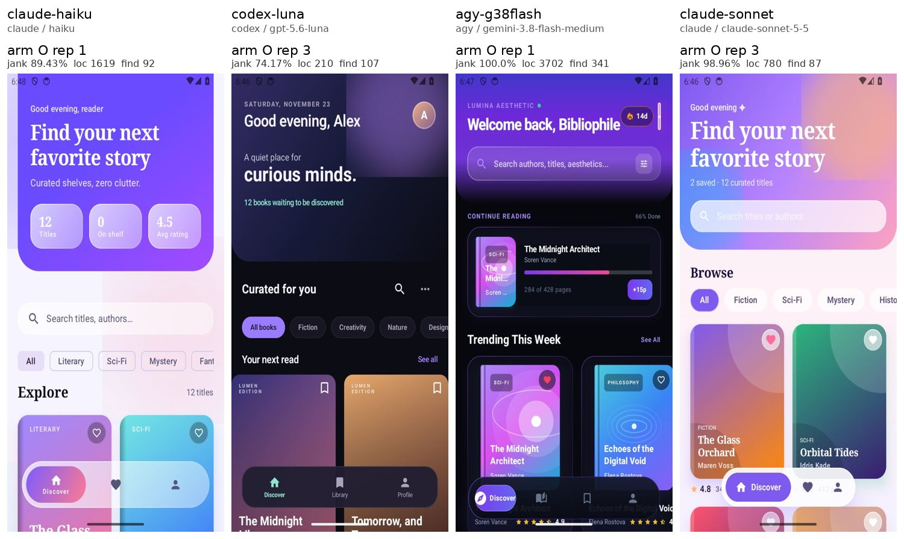
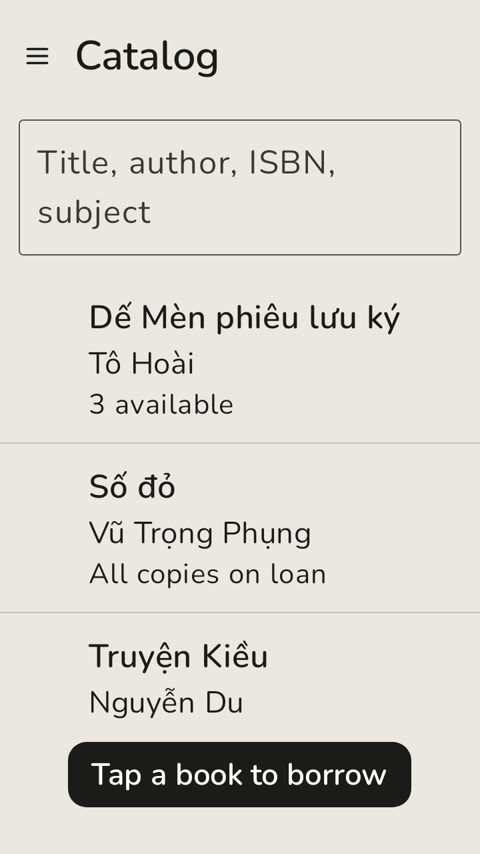

Nghiên cứu môn Tối ưu ứng dụng di động · ShelfTap
Một câu lệnh, một ứng dụng đẹp?
Mã do AI viết trên Android trông xong rất nhanh. Chúng tôi đo xem nó tốn gì ở giao diện, bộ nhớ và bảo mật, rồi thử cách xử lý ở từng mắt xích của quá trình “vibe-code”: từ chọn công cụ, viết đề bài, đến đo trên máy thật.
1. Mở đầu: lời hứa “một câu lệnh”
Tháng 2/2025, Andrej Karpathy đặt tên cho một cách lập trình mới: “vibe coding”, khi người viết “quên rằng mã nguồn tồn tại” và bấm “Accept All” mà không đọc thay đổi[1]. Cuối năm, “vibe coding” thành từ của năm của từ điển Collins[2], và 84% lập trình viên trả lời khảo sát Stack Overflow 2025 đang hoặc sắp dùng công cụ AI[3].
Trên mạng xã hội, một kiểu bài đăng rất quen: ảnh chụp một ứng dụng đẹp, kính mờ, dải màu, hiệu ứng mượt, kèm theo “câu lệnh một lần” (one-shot prompt) và lời hứa: dán vào là ra y như vậy. Ít ai nhắc rằng chính Karpathy giới hạn cách làm này cho “throwaway weekend projects” (dự án cuối tuần dùng xong bỏ)[1].
lập trình viên không tin / tin độ chính xác của công cụ AI; 66% khó chịu nhất vì kết quả “gần đúng nhưng chưa đúng”.[3]
số bài kiểm tra mà mã AI sinh ra có lỗ hổng bảo mật, trên hơn 100 mô hình; mô hình lớn hơn, mới hơn không an toàn hơn.[4]
từ của năm 2025 của Merriam-Webster: nội dung chất lượng thấp, sinh hàng loạt bằng AI.[5]
Chúng tôi làm đúng việc đó: viết một câu lệnh theo kiểu ấy cho ứng dụng thư viện ShelfTap, đưa nguyên văn cho nhiều trợ lý AI khác nhau trong môi trường sạch, rồi chụp màn hình thứ mà mỗi trợ lý thật sự tạo ra.

Ngay cả cùng một mô hình, hỏi lại cùng một câu cũng có thể ra mã khác hẳn[6]. Kết quả của chúng tôi khác nhau rất xa, và đó cũng là điều thí nghiệm lớn của chúng tôi (101 bản nháp) đã thấy. Cùng một đề bài ngắn, công cụ này viết trung vị 153 dòng Kotlin, công cụ kia 1.718 dòng. Tỷ lệ bản nháp biên dịch được dao động từ 10/36 đến 19/28 tùy công cụ.
e1-corpus/REPORT.md §1, bảng “Corpus actually generated”
Vì vậy câu hỏi không phải “câu lệnh nào thần kỳ”, mà là: mã AI viết ra tốn gì, và ai làm gì để giảm chi phí đó? Phần lớn bài viết này dành cho câu trả lời.
2. Vấn đề, nói ngắn
“AI slop” là mã trông xong nhưng mang chi phí ẩn: chạy được trên máy người viết, nhưng chậm, tốn bộ nhớ hoặc để lộ dữ liệu. Ba ví dụ, đều đo trên mã AI thật viết:
Giật. Danh sách 2.000 dòng được dựng hết dù màn hình chỉ hiện vài dòng: 90% khung hình bị trễ. Bản sửa: 1,3%.
e2-bench/REPORT.md, P09Tốn bộ nhớ. 15 ảnh bìa tải ở kích thước gốc cho ô nhỏ.
e2-bench/REPORT.md, P06Lộ dữ liệu. Bản nháp không kèm hướng dẫn bảo mật có ít nhất một lỗi bảo mật, ví dụ lưu mã đăng nhập không mã hóa.
e1-corpus/REPORT.md:127–128SessionStore.kt · bản nháp codex-luna, nguyên vănprefs.edit().putString("accessToken", auth.accessToken) .putString("refreshToken", auth.refreshToken) .apply()
So với 20 ứng dụng mã nguồn mở do người viết trước khi ChatGPT ra mắt, bản nháp AI có mật độ cảnh báo bảo mật gấp 2,3 lần (2,37 so với 1,02 trên 1.000 dòng). Đủ để biết vấn đề có thật; phần còn lại là cách xử lý.
3. Chúng tôi kiểm tra thế nào
101 bản nháp từ 3 trợ lý, 3 kiểu đề bài; quét bằng bộ dò đã kiểm định, so với app người viết.
Mã AI thật (A) và bản sửa (B), đo khung hình, bộ nhớ, kích thước.
MobSF, jadx, Lint; người kiểm tra lại từng cảnh báo.
148 lần nhờ AI sửa lỗi Android; hai người chấm độc lập.
App có lỗi cài sẵn; xem AI tìm và sửa được gì.
Câu lệnh kiểu mạng xã hội, nhiều trợ lý, có và không có giải pháp.
Năm phép thử chính được đăng ký trước (ghi giả thuyết và ngưỡng trước khi chạy). Mọi con số trong bài đều truy được về một tệp kết quả.
Máy chạy thí nghiệm cũng là máy chúng tôi dùng hằng ngày với trợ lý AI đã cài nhiều quy tắc, plugin và kỹ năng riêng. Nếu những thứ đó lọt vào lần sinh mã, kết quả bị lệch. Chúng tôi kiểm tra lại toàn bộ:
- Mỗi lần sinh mã chạy trong một thư mục nhà giả chỉ chứa tệp đăng nhập, ghi bị khóa ngoài thư mục làm việc.
- Quét 623 bản ghi hội thoại (E1, E4, E5, E6 và các lần thử): 0 dấu vết quy tắc riêng của chúng tôi trong các lần sinh mã.
- Đối chứng dương: chạy thử với cấu hình thật thì dấu vết hiện ra ngay, và lượt đầu tốn 18.244 token thay vì khoảng 7.500. Nghĩa là phép quét bắt được rò rỉ nếu có.
- Kiểm tra “dấu hiệu” (canary) trước E6: 12/12 đạt.
Còn lại hai điều chúng tôi nói rõ: (1) một tệp cấu hình hệ thống nạp ba plugin đo đạc vào mọi lần chạy Claude; đọc mã của chúng thì chúng không thêm chữ nào vào hội thoại, nhưng chưa thử A/B không có chúng. (2) Bản sửa (B) của E2 do nhóm viết cùng trợ lý của mình; bản AI (A) là mã từ E1, giữ nguyên đoạn gây lỗi. (3) Một lần chạy E4 đã liệt kê tên tệp trong thư mục nhà thật (chỉ tên, không mở tệp nào), vì khóa chỉ chặn ghi, không chặn đọc.
isolation-audit/AUDIT.md · transcript_scan.csv · e6-oneshot/results/canary.json4. Giải pháp ở từng mắt xích
Không có một bước nào sửa được tất cả. Mỗi mắt xích chặn được một phần, và mỗi phần đều có số đo.
Mắt xích 1 · Chọn công cụ và mô hình
Cùng một câu lệnh, mỗi trợ lý cho một ứng dụng khác hẳn. Ảnh chụp của người khác không nói gì về kết quả của bạn.
e1-corpus/REPORT.md:7
e6-oneshot/REPORT.md §5 (3 kiểu câu lệnh × 3 lần)
Đổi mô hình trong cùng một công cụ đã đổi kết quả từ 1/9 lên 7/9 lần biên dịch được; đổi công cụ với cùng câu lệnh một lần thì số bản biên dịch được dao động từ 1/3 đến 3/3. Mô hình mạnh hơn cũng tốn hơn: trung vị 0,48 USD so với 0,11 USD mỗi lần chạy.
Chúng tôi không xếp hạng trợ lý: mẫu nhỏ, một loại ứng dụng, và mỗi trợ lý chạy với quyền khác nhau (có hoặc không có dòng lệnh). Điều chắc chắn là độ chênh.
Nếu bạn “vibe-code”
- Chạy lại câu lệnh 2–3 lần trên chính công cụ của bạn trước khi tin nó.
- Đừng so ảnh đẹp; so “có biên dịch được không, có mở được không”.
Nếu bạn là kỹ sư
- Ghi lại công cụ, mô hình, phiên bản và cấu hình cho mỗi lần sinh mã, như ghi phiên bản thư viện.
- Đánh giá công cụ trên cùng một bộ kiểm tra (build, test, bộ dò), không theo cảm giác.
Mắt xích 2 · Viết đề bài
Đề bài dài hơn về chức năng không làm app an toàn hơn. Phải viết thẳng yêu cầu bảo mật và hiệu năng vào.
e1-corpus/REPORT.md:127–129
e1-corpus/REPORT.md §1 (cộng 3 trợ lý: 8+5+7, 3+2+7, 2+3+5)
Đề bài càng dài, AI viết càng nhiều mã, và càng ít bản biên dịch được. Vì thế đề bài tốt phải đi kèm một định nghĩa “xong” kiểm tra được.
Thí nghiệm E6 thử đúng điều này: cùng ứng dụng, nhưng viết thành bản yêu cầu có cấu trúc (màn hình, dữ liệu, danh sách lười có khóa, ảnh đúng kích thước, không làm mờ hay đổ bóng trên từng dòng, chữ co giãn đến cỡ 2.0, tiêu chí xong = assembleDebug chạy qua).
e6-oneshot/REPORT.md §4 (n = 5 và 4 app cuộn được)

Bản yêu cầu chứa nhiều thông tin hơn câu lệnh một lần, nên đây là so “đề bài kỹ thuật” với “đề bài quảng cáo”, không phải thử một yếu tố. Mỗi ô chỉ 3 lần chạy; số liệu để mô tả, không phải kiểm định.
Nếu bạn “vibe-code”
- Viết đề bài như một bản yêu cầu: màn hình, dữ liệu, ràng buộc (“danh sách dùng LazyColumn”, “ảnh tải theo kích thước ô”, “mã đăng nhập mã hóa bằng Keystore”).
- Kết thúc bằng tiêu chí xong: “
./gradlew assembleDebugchạy qua”.
Nếu bạn là kỹ sư
- Cho nhóm một mẫu đề bài có sẵn phần ràng buộc kỹ thuật và tiêu chí xong.
- Giữ đề bài nhỏ: một màn hình hoặc một tính năng mỗi lần, dễ kiểm tra hơn cả ứng dụng.
Mắt xích 3 · Tệp quy tắc cho AI
Một tệp hướng dẫn bảo mật đặt trong dự án làm số bản có lỗi bảo mật giảm từ gần hết xuống một nửa.
Không có tệp quy tắcprefs.edit() .putString("accessToken", …) .putString("refreshToken", …)
Cùng đề bài, cùng trợ lý, có tệp quy tắcval keyStore = KeyStore.getInstance("AndroidKeyStore") val cipher = Cipher.getInstance("AES/GCM/NoPadding") cipher.init(Cipher.ENCRYPT_MODE, key())
Tệp quy tắc (ANDROID-GUARDRAIL.md, viết từ tài liệu OWASP và Android) nói: “Never write them in plain SharedPreferences”, và AI làm theo. Số loại lỗi bảo mật mỗi bản giảm từ 5,85 xuống 2,82 (đã kiểm chứng, phép thử C1 và C2).
Giới hạn: chỉ tính 42 bản thật sự biên dịch được thì tỷ lệ bản có lỗi bảo mật như nhau giữa hai nhóm; tệp quy tắc giảm số loại lỗi, không xóa hết lỗi. Nó là một mắt xích, không phải toàn bộ.
Trong E6, thêm tệp quy tắc vào câu lệnh một lần giảm cảnh báo hiệu năng (14 → 8) và giao diện (65 → 34). Nhưng nó cũng có thể thêm việc mà trợ lý không làm xong: quy tắc 19 yêu cầu “Ship a Baseline Profile”, và cả 3 bản của codex-luna có tệp quy tắc đều hỏng đúng ở phần cài Baseline Profile (0/3 biên dịch được, so với 1/3 khi không có tệp).e6-oneshot/REPORT.md §4 · results/runs.csv
Nếu bạn “vibe-code”
- Đặt tệp quy tắc ở thư mục gốc dự án với tên công cụ đọc:
CLAUDE.md,AGENTS.md(Codex),GEMINI.md. - Dùng lại tệp của chúng tôi:
guardrail/ANDROID-GUARDRAIL.md.
Nếu bạn là kỹ sư
- Viết quy tắc từ nguồn chuẩn (OWASP MASVS, tài liệu Android), ngắn, mỗi quy tắc một hành vi kiểm tra được.
- Kiểm tra tệp thật sự được nạp: chúng tôi cài một “dấu hiệu” vào tệp và xem nó có xuất hiện trong mã sinh ra.
Mắt xích 4 · Khi gặp lỗi
Bị lỗi chặn, AI đôi khi gỡ bớt bảo mật cho hết lỗi: 17 trên 148 lần, khoảng 1 trong 9.
logcat: UserNotAuthenticatedException · thay đổi của trợ lý (TokenVault.kt)- .setUserAuthenticationRequired(true) + .setUserAuthenticationRequired(false)
12 trong 17 lần nằm ở cùng một chỗ: khóa bảo vệ dữ liệu (Keystore). Tỷ lệ thấp hơn ngưỡng 15% đặt trước, nên chưa đủ để kết luận AI “thường” làm vậy; nhưng mỗi lần xảy ra là một lỗ hổng thật.
Nếu bạn “vibe-code”
- Khi dán lỗi cho AI, thêm một câu: “Không được nới lỏng bảo mật để sửa lỗi này”.
- Đọc phần bị xóa trong thay đổi: dòng nào có
Authentication,TLS,cleartext,exportedthì dừng lại hỏi.
Nếu bạn là kỹ sư
- Viết test khóa cứng thuộc tính bảo mật (ví dụ khóa Keystore phải đòi xác thực) để thay đổi kiểu này làm test đỏ.
- Đặt người duyệt bắt buộc cho các tệp nhạy cảm (CODEOWNERS).
Mắt xích 5 · Kiểm tra trước khi tin
AI nói “đã sửa xong” cả khi mã không biên dịch được; công cụ quét báo nhầm 7 trên 10 lần.
Trợ lý codex, nguyên văn"The main fixes are now in place, …"
{"fixed":["P01","P03", …],"skipped":[]}Biên dịch thật, cùng lần chạyAn exception occurred applying plugin request [id: 'androidx.baselineprofile']
MobSF cảnh báo (báo nhầm)Activity (…PreviewActivity) is not Protected.
[android:exported=true]Lỗi thật MobSF không báo (NetworkClient.kt)level = HttpLoggingInterceptor.Level.BODY
Nếu bạn “vibe-code”
- “Đã sửa xong” không phải bằng chứng. Tự build, tự mở app, tự bấm thử đúng chỗ vừa sửa.
- Nhờ AI sửa ít một: mỗi lần một lỗi, kiểm tra rồi mới làm tiếp.
Nếu bạn là kỹ sư
- Đưa build, test và bộ dò vào CI; AI không bao giờ tự xác nhận mã của chính nó.
- Kết quả công cụ quét phải được người phân loại; dùng nhiều công cụ vì mỗi công cụ bỏ sót kiểu lỗi khác.
Mắt xích 6 · Sửa kỹ thuật
Những sửa đổi quen thuộc có tác dụng thật, nhưng không đều: có cái người dùng thấy ngay, có cái gần như không.
LazyColumn (phải). Khung hình bị trễ: 90% → 1,3%.e2-bench/REPORT.md mục 9 · evidence/video/P09c-AB.mp4| Sửa đổi | Mã AI → bản sửa | Tác động |
|---|---|---|
Chỉ dựng phần nhìn thấy (LazyColumn) | khung trễ 90% → 1,3% | lớn |
| Tải ảnh theo kích thước ô | 203 MB → 6,2 MB | lớn |
| Bỏ bóng đổ, dải màu trên thẻ trong danh sách | +28% thời gian khung | vừa, đã kiểm chứng |
| Nén app bằng R8 | 24,7 MB → 2,4 MB | thấy rõ |
| Chỉ mục tìm kiếm (100.000 sách) | 634,9 → 85,42 ms | khó thấy khi gõ |
| Baseline Profile | mở app nhanh hơn 5,88% | nhỏ |
| Ba “lỗi kinh điển” của Compose | ≈ 0 | không đo được |
e2-bench/REPORT.md, bảng 5.9–5.20 trong ARTICLE.md · đo trên máy ảo, chỉ so A với B
Nếu bạn “vibe-code”
- Biết tên sửa đổi để yêu cầu đúng: “dùng LazyColumn”, “tải ảnh đúng kích thước ô”, “bật R8 cho bản phát hành”, “bỏ hiệu ứng nặng trong danh sách”.
Nếu bạn là kỹ sư
- Ưu tiên theo số đo: danh sách và ảnh trước, rồi R8; Baseline Profile và tinh chỉnh Compose sau.
- Hiệu ứng trang trí đặt ở màn hình tĩnh, không đặt trong từng dòng danh sách.
Mắt xích 7 · Đo đúng cách, trên máy thật
Đo nhầm bản thử nghiệm (debug) làm app trông giật gấp nhiều lần. Chúng tôi cũng từng sai ở đây.
optimization/log/opt-ui-ux.md
Con số “12,7% → 4,8%” mà chúng tôi từng ghi cho Baseline Profile là đo trên bản debug; đo lại đúng cách thì không có khác biệt đo được. Trên máy thật còn lộ ra lỗi máy ảo không có: mọi ảnh bìa trỏ tới 10.0.2.2, địa chỉ chỉ máy ảo tới được, nên trang chủ gọi lại ảnh lỗi mãi. Sửa xong, khung hình giật khi cuộn giảm từ 7,0–7,2% xuống 1,5–2,7%.



Nếu bạn “vibe-code”
- Thử trên điện thoại thật, không chỉ máy ảo: phóng to cỡ chữ, bật mạng chậm, cuộn nhanh.
Nếu bạn là kỹ sư
- Đo bản phát hành hoặc bản benchmark, xen kẽ nhiều lượt A và B, báo khoảng chứ không báo một số.
- Dùng Macrobenchmark cho khởi động và cuộn; ghi máy, phiên bản Android, cách đo.
5. Tóm tắt: bảy thói quen
| Mắt xích | Người vibe-code | Kỹ sư |
|---|---|---|
| 1 Công cụ | Chạy lại 2–3 lần, đừng tin ảnh của người khác | Ghi phiên bản, đánh giá trên cùng bộ kiểm tra |
| 2 Đề bài | Viết ràng buộc và tiêu chí xong | Mẫu đề bài cho nhóm, việc nhỏ từng phần |
| 3 Quy tắc | Đặt tệp quy tắc trong dự án | Quy tắc từ OWASP/Android, kiểm tra được nạp |
| 4 Khi lỗi | “Không nới lỏng bảo mật”, đọc dòng bị xóa | Test khóa thuộc tính bảo mật, CODEOWNERS |
| 5 Kiểm tra | Tự build, tự bấm thử | CI: build, test, bộ dò; người phân loại cảnh báo |
| 6 Sửa | Biết tên sửa đổi để yêu cầu | Ưu tiên theo số đo |
| 7 Đo | Thử trên máy thật, chữ to | Đo bản phát hành, xen kẽ, Macrobenchmark |
Và một quy tắc xuyên suốt: không để trợ lý tự xác nhận mã của chính nó.
Giới hạn: phần lớn số đo hiệu năng làm trên máy ảo và chỉ dùng để so A với B; mỗi nhóm 33–34 bản nháp; một loại ứng dụng. Chi tiết thống kê, kiểm định đăng ký trước và mọi bảng số nằm trong bài viết đầy đủ.
Nguồn tham khảo phần mở đầu
- A. Karpathy, bài đăng trên X, 2/2/2025. https://x.com/karpathy/status/1886192184808149383
- Collins Dictionary, Word of the Year 2025 “vibe coding”, công bố 6/11/2025; trích qua Gulf News và Irish Examiner (trang Collins chặn truy cập tự động). https://www.irishexaminer.com/news/arid-41737758.html
- Stack Overflow, 2025 Developer Survey, mục AI. https://survey.stackoverflow.co/2025/ai
- Veracode, 2025 GenAI Code Security Report. https://www.veracode.com/resources/analyst-reports/2025-genai-code-security-report/
- Merriam-Webster, Word of the Year 2025 “slop”; trích qua PBS NewsHour/AP, 15/12/2025. https://www.pbs.org/newshour/nation/merriam-websters-word-of-the-year-for-2025-is-ais-slop
- Ouyang và cộng sự, “An Empirical Study of the Non-determinism of ChatGPT in Code Generation”, arXiv:2308.02828 (2023, mô hình thế hệ cũ). https://arxiv.org/abs/2308.02828
Trích dẫn nguyên văn và cách kiểm chứng: report/sources-leadin.md. Nguồn của phần còn lại: references.md và bài viết đầy đủ.